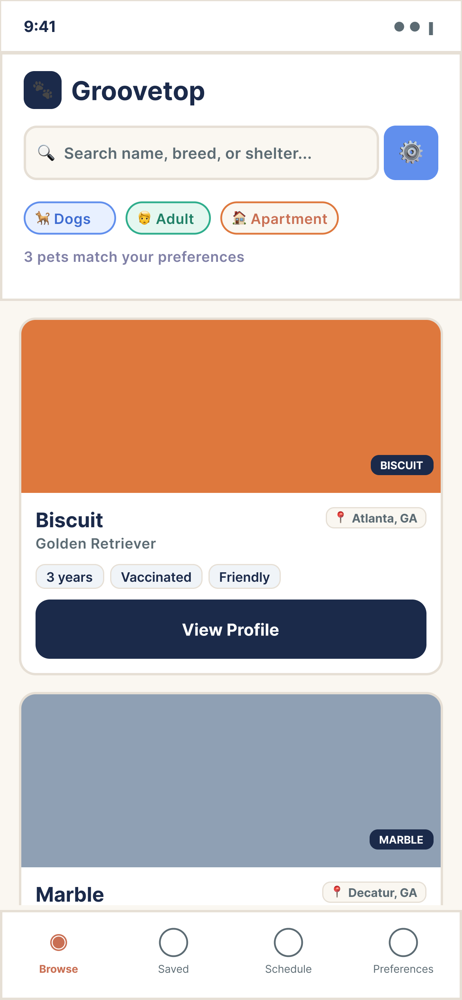
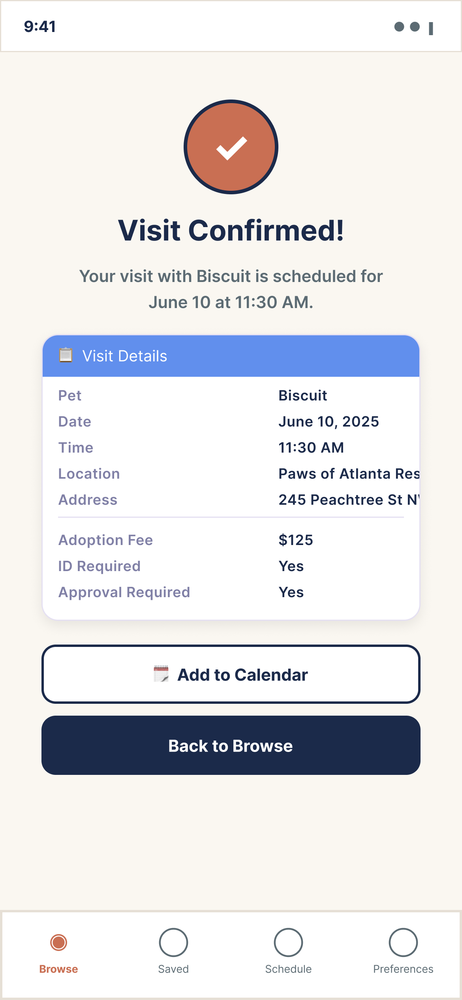
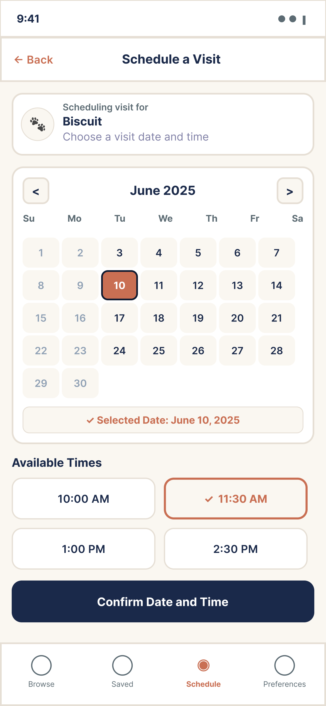
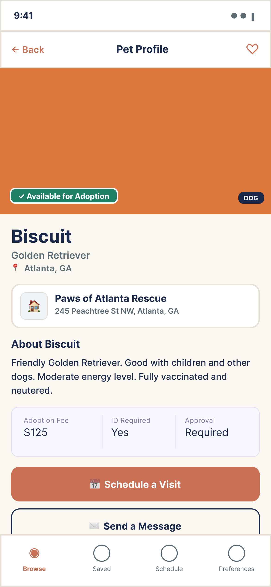
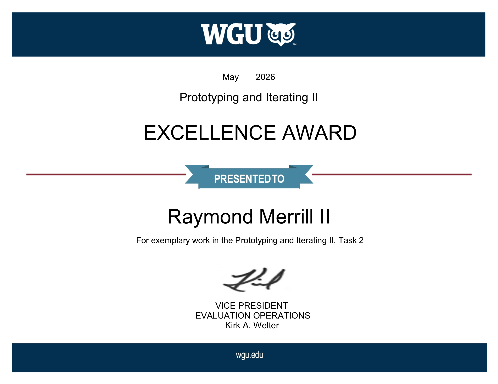

Groovetop · Case Study
13 / 13 — Proof, Carried

WGU Excellence Award · May 2026
Awarded to the original prototype. The system came after.
But I kept
building.
dabombayux.vercel.app
Raymond Merrill II · Da'Bombay UX